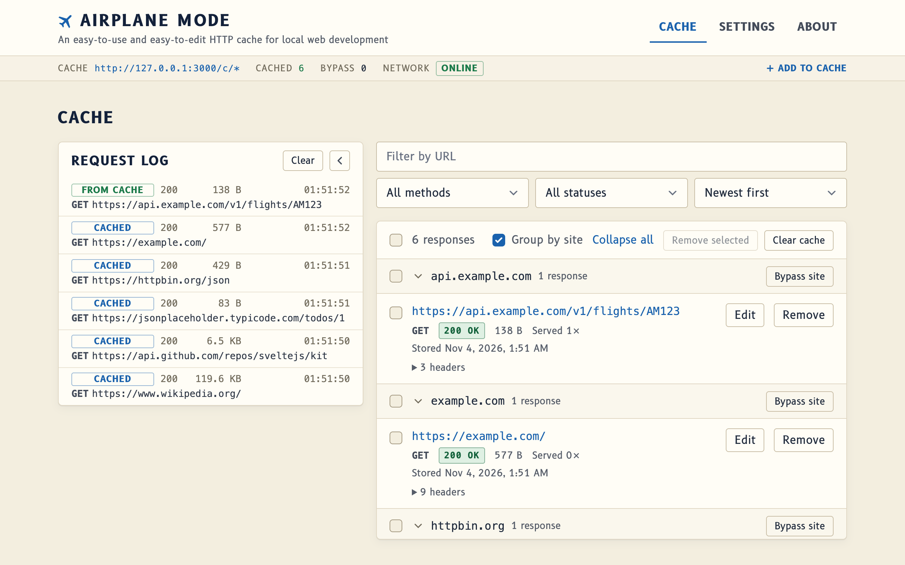

Airplane Mode
An easy-to-use and easy-to-edit HTTP cache for web development.
-
Work offline
Load a page or API once, then keep using it on a plane, a train or bad hotel Wi-Fi.
-
Freeze a moving target
Pin down a site or API that keeps changing so your demo, test or story doesn't break under you.
-
Edit what comes back
Change a stored response's status, headers or content, or swap in a file, to try out edge cases without touching the server.

Download version 1.0.0
The macOS app isn't notarized yet. If macOS won't open it, go to System Settings → Privacy & Security and click Open Anyway.